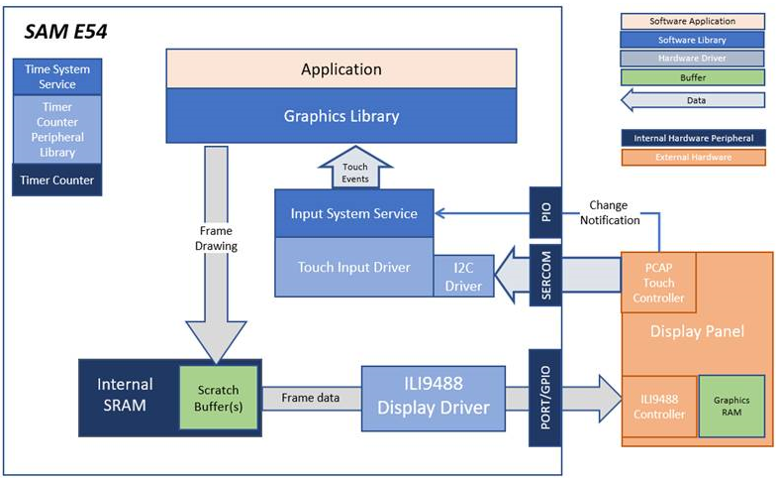
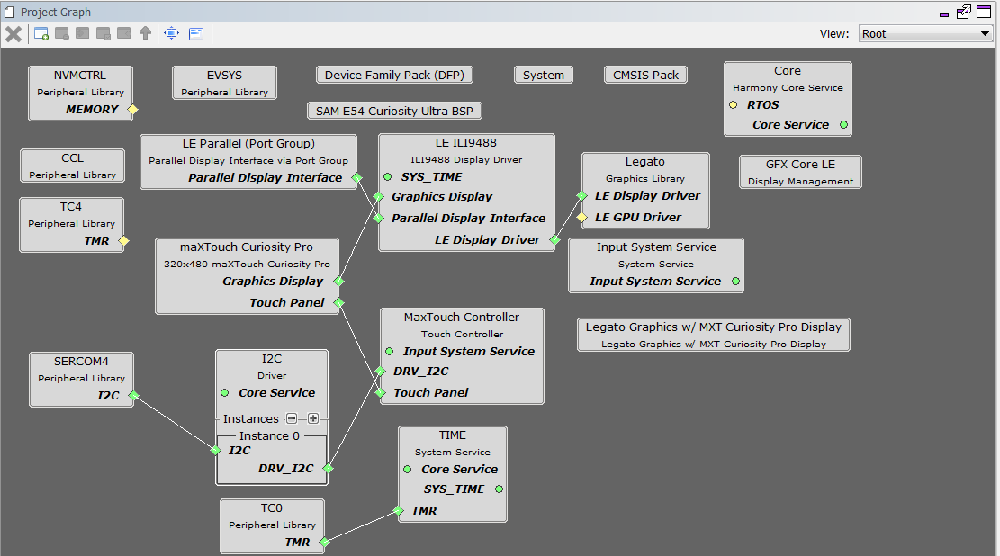
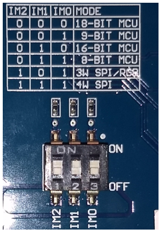
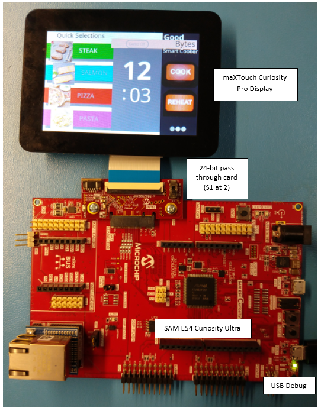
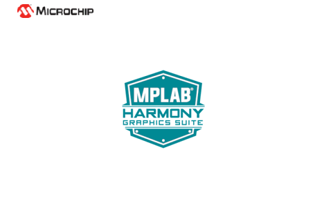
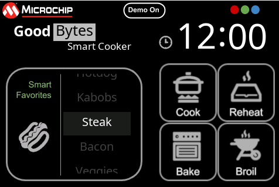
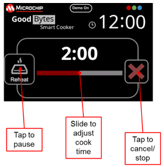

The application features user touch input through the integrated touch screen on the display panel. Touch input from the touch controller goes through the I2C port, and the Input System Service acquires the touch input information from the Touch and I2C drivers. The Input System Service sends touch events to the Graphics Library, which processes these events and updates the frame data accordingly.
This configuration runs on the SAM E54 Curiosity Ultra board with a 24-bit passthrough GFX interface card and a maXTouch Curiosity Pro display. The maXTouch Curiosity Pro display has an ILI9488 display controller that is connected to the SAM E54 thru the port/GPIO peripheral using an 8-bit 8080/Parallel interface, boosted with a combination of DMA and CCL peripherals. The Legato graphics library draws the updated sections of the frame to an internal scratch buffer which is used by the ILI9488 display driver to update the ILI9488 display controller.
User touch input on the display panel is received thru the PCAP capacitive touch controller, which sends a notification to the Touch Input Driver. The Touch Input Driver reads the touch information over I2C and sends the touch event to the Graphics Library thru the Input System Service.
Demonstration Features
• Legato Graphics Library
• Input system service and touch driver
• Time system service, timer-counter peripheral library and driver
• ILI9488 display 8-bit parallel mode driver (DMA-CCL boosted)
• 16-bit RGB565 color depth (8-bit palettized double buffering)
• Port/GPIO peripheral
• I2C peripheral library and driver
• Images and Fonts for user interface stored in internal flash
• Alpha-blending

The Project Graph diagram shows the Harmony components that are included in this application. Lines between components are drawn to satisfy components that depend on a capability that another component provides.
For the DMA-CCL boosted setup, components TC4, CCL needs to be added.
Additional components to support QSPI and SST26 needs to be added and connected manually.
Some of these components are fine with default settings, while other require some changes. The following is a list of all the components that required custom settings.


To setup the CCL to clock the pixel data, make sure PB09 is set to CCL_OUT2

Instead of write strobe, make sure PB17 is setup as RSDC instead

The parent directory for this application is gfx_apps/legato_cooker. To build this application, use MPLABX to open the gfx_apps/legato_cooker/firmware/legato_ck_e54_cult_cpro_parallel.X project file.
The following table lists configuration properties:
|
Project Name |
BSP Used |
Graphics Template Used |
Description |
|
legato_ck_e54_cult_cpro_parallel.X |
SAM E54 Curiosity Ultra BSP |
Legato Graphics w/ Curiosity Pro Display |
SAM E54 Curiosity Ultra w/ maXTouch Curiosity Pro display via 8-bit parallel interface |
Note: This application may contain custom code that is marked by the comments "// START OF CUSTOM CODE ..." and "// END OF CUSTOM CODE". If you use the MPLAB Harmony Configurator to regenerate the application code, do not remove or replace the custom code.
Configure the hardware as follows:
• Attach the 24-bit pass through card to the GFX Connector on the SAM E54 Curiosity Ultra board.
• Connect the ribbon cable from the maXTouch Curiosity Pro Display to the ribbon connector on the 24-bit pass through card. Make sure that the S1 switch on the 24-bit pass through card is set to 2.
• On the backside of the maXTouch Curiosity Pro display, set the IM[2:0] switches to ‘011’ for 8-bit MCU mode.
• Connect a USB cable from the host computer to the DEBUG USB port on the SAM E54 Curiosity Ultra board. This USB connection is used for power, code download and debugging.
• Connect 5.5V power supply to the SAM E54 Curiosity Ultra board is optional

The final hardware set-up should be:

Power up the board by connecting the power adapter to power connector or a powered USB cable to the DEBUG USB port on the board.
The application first boots to an alpha-blend Splash Screen..

Once the Splash Screen animation completes, the application boots to a Basic Main Screen. The color gamut for the Basic Main Screen is purposely muted

Touch “Cook”, “Reheat”, “Bake” or “Broil” button to initial a cooking progress sequence

Touch the RGB ellipse button on the upper right to switch to the Color Screen. The Color Screen is designed to transition from the Basic Screen with some simple animation.
|
MPLAB® Harmony Graphics Suite Applications
|